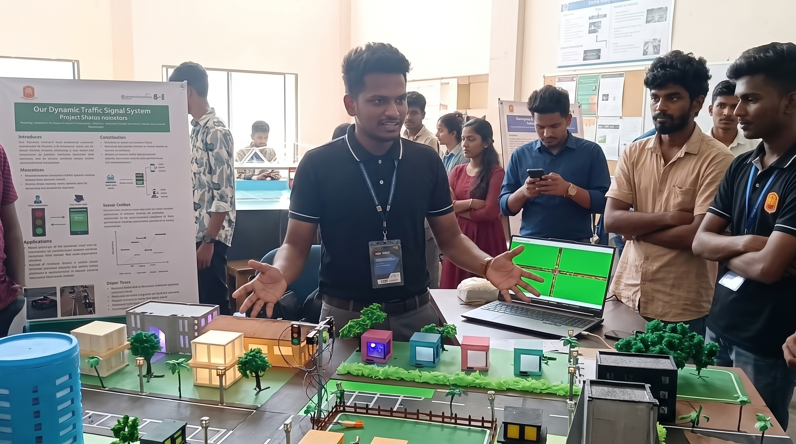
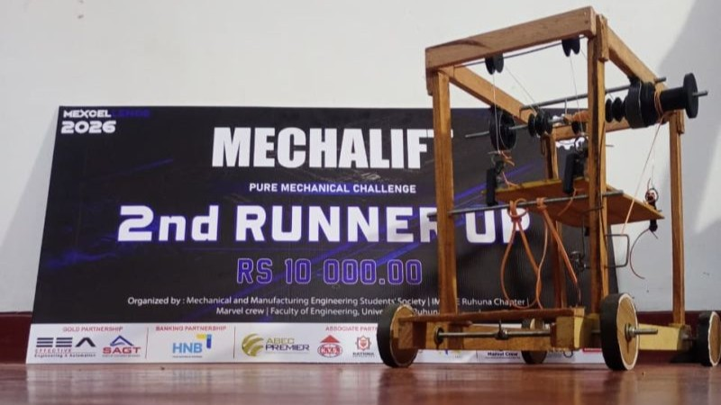
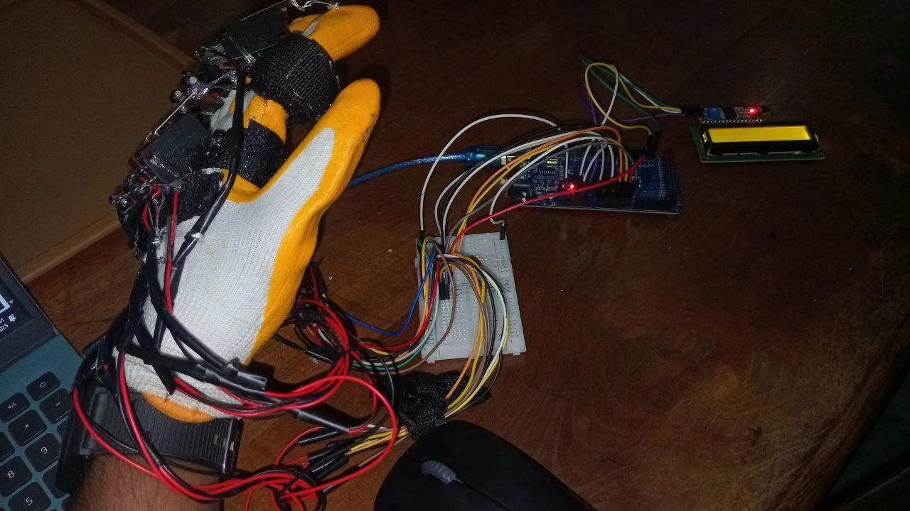
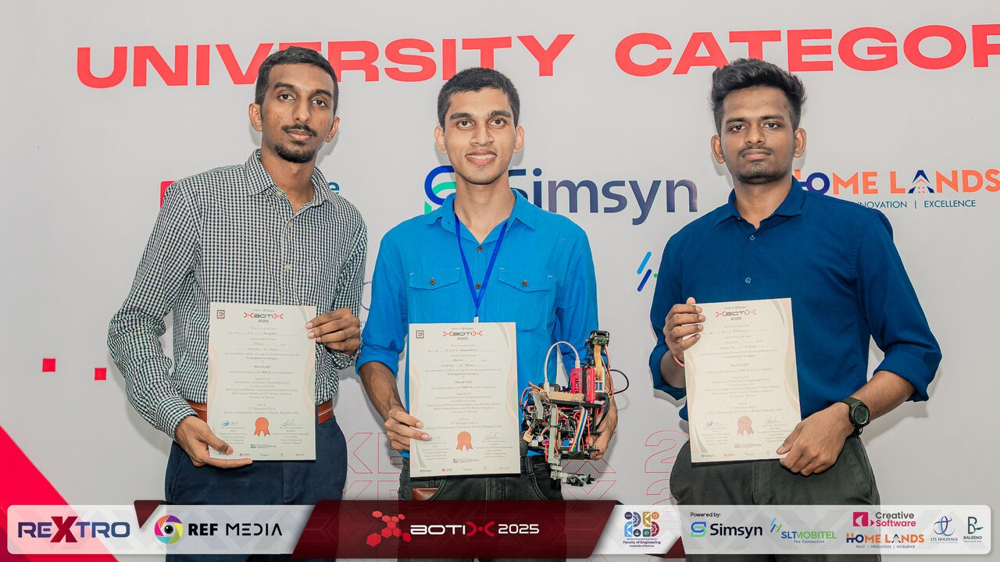

Featured Projects

On HoldDynamic Traffic Signal System | REXTRO 2025
An adaptive traffic management prototype developed for REXTRO 2025 that dynamically allocates signal timing based on real-time queue density. Evaluated on Julgaha Junction traffic data, achieving up to a 49% reduction in wait times.
KeyFocus: Real-time optimization, urban mobility, teamwork & hardware simulation.

Completed2nd Runner-Up | MEXCELLENCE 2026 – MECHALIFT
A purely mechanical cargo-handling system developed for MEXCELLENCE 2026 that retrieves, lifts, transports, and unloads payloads without any electrical components. Led the team to secure 2nd Runner-Up at the Department of Mechanical and Manufacturing Engineering, University of Ruhuna.
KeyFocus: Mechanical design, zero-power mechanisms, constraint prototyping & team leadership.

In ProgressSign Language Convertor
A wearable assistive prototype designed to track finger flex and hand orientation, translating sign language gestures into real-time text and speech. Focused on engineering an accessible, low-cost hardware architecture to make everyday assistive tech affordable for the community.
Key Focus: Assistive hardware, affordable sensing, gesture recognition & embedded systems.

CompletedNextrone | Autonomous Line-Following Robot
An autonomous navigation robot designed and tuned for high-precision track traversal at REXTRO 2025 (University of Ruhuna). Competed in the University Category as Team Nextrone, securing a place among the Top 15 teams.
Key Focus: Autonomous tracking, sensor integration, hardware calibration & cross-functional teamwork.